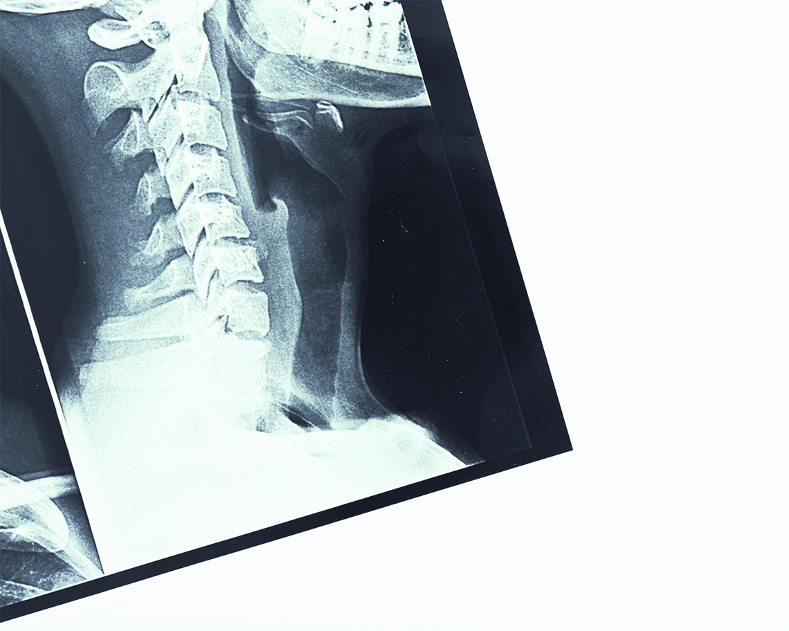
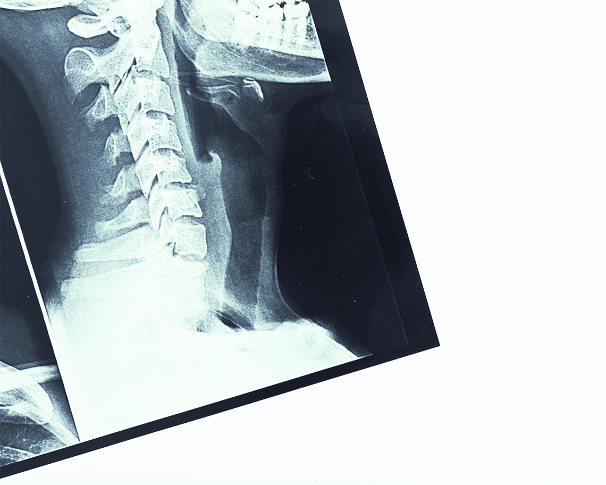
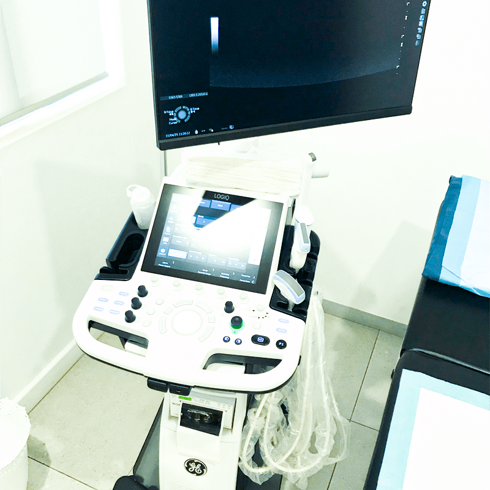
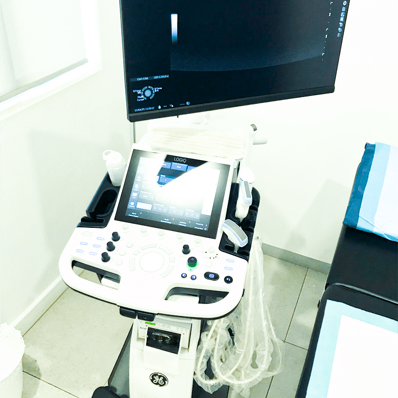

Iatrolex
Diagnostic
Radiologists
Your Health Journey begins with a Precise diagnosis and Passionate Care. We are here
to ensure you receive our
best service.
Your Health Journey begins with a Precise diagnosis and Passionate Care. We are here
to ensure you receive our
best service.
We are highly qualified diagnostic radiologists, dedicated to delivering professional and dependable medical imaging services. Equipped with cutting-edge diagnostic technology and supported by a skilled team of medical imaging specialists, we ensure precision and excellence in patient care. At iatrolex, your health, comfort and safety are our top priorities, providing expert service in a welcoming environment.
 

X-ray imaging involves exposing a part of the body to a small dose of ionising radiation to produce pictures to help doctors diagnose and treat various conditions.


Mammography is a special type of X-ray that helps doctors check for signs of breast cancer. It creates detailed images of breast tissue, allowing early detection of any changes that might not be felt during a physical exam.
 

Ultrasonography, or ultrasound imaging, uses sound waves to create pictures of the inside of the body.


Computed tomography, commonly known as CT imaging or CAT scan, is a medical imaging technique that combines multiple X-ray images taken from different angles to create detailed cross-sectional pictures of the body.

This uses imaging techniques such as CT and ultrasound, to guide minimally invasive procedures. These techniques help diagnose and treat various conditions without the need for major surgery.